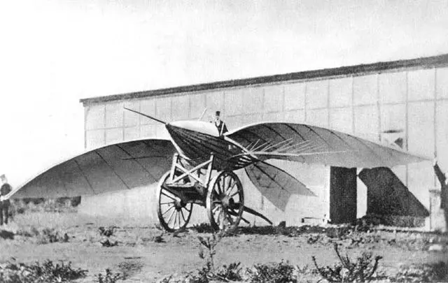
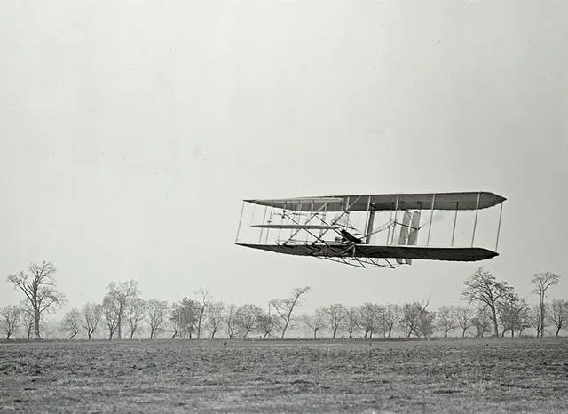

Many stories from antiquity involve flight, such as the Greek legends Icarus and Daedalus and the ancient Indian epic Vimana. In Greece, around 400 BC, Archytas is credited with designing and building the first artificial, self-propelled flying device, a bird-shaped model propelled by a jet, possibly steam, that is said to have Flying about 200 meters
The earliest recorded attempts at paragliding were by the 9th-century Andalusian and Arabic-language poet Abbas ibn Finas and the 11th-century English monk the Emir of Malmesbury. Both experiments harmed the pilots. Leonardo da Vinci studied bird wing design and designed a man-machine in his Manuscript on the Flight of the Birds (1502).
The history of aircraft can be traced back to the late 19th century, with the Wright brothers playing an important role in the history of aircraft development. They successfully manufactured and tested the first manned aircraft in 1903. This aircraft was called "Aviator" 1, marking the realization of the human dream of flying. This achievement of the Wright brothers not only made a breakthrough in technology, but also had a profound impact on the field of aviation.


The makers of airplanes -——the Wright brothers
The Wright brothers are famous American inventors. The elder brother is Wilbur Wright, and the younger brother is Orville Wright. On December 17, 1903, the Wright brothers made the first test flight of an aircraft that was completely controlled, relied on its own power, had a fuselage heavier than air, and could stay in the air continuously without landing, which was the world's first aircraft "Aviator One".
The first real airplane
In 1903, after a long period of exploration, the Wright brothers in the United States made a powered aircraft using spruce, muslin and other materials. Although the aircraft had a simple structure, it already had the basic elements needed for a modern aircraft. In 12 It completed its first real flight on March 17, with the fourth flight being 852 feet above the ground and lasting 59 seconds.
Subsequently, the Wright brothers continued to improve the aircraft. The Wright Flyer II, which appeared in 1904, had better performance and reached a maximum flight altitude of 1,300 feet. The success of the Wright brothers also inspired other inventors in the world. Before the outbreak of World War I in 1914 , aircraft have become technically mature, and people can already design and build reliable aircraft, such as the French Blériot XI, which first flew in 1909 and became the first aircraft to fly across the English Channel.